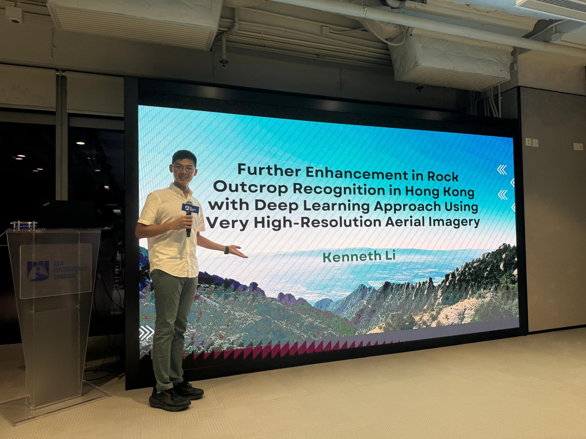
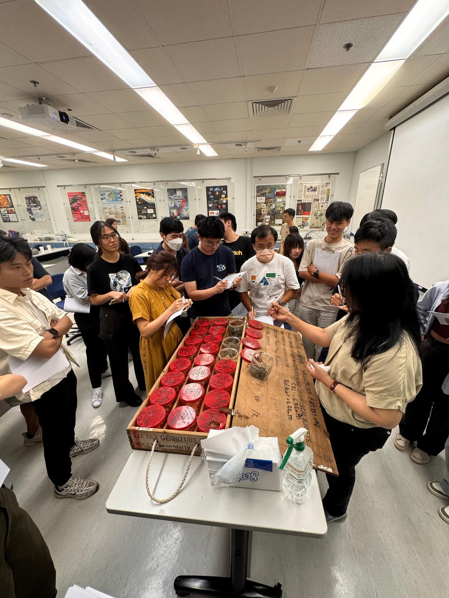
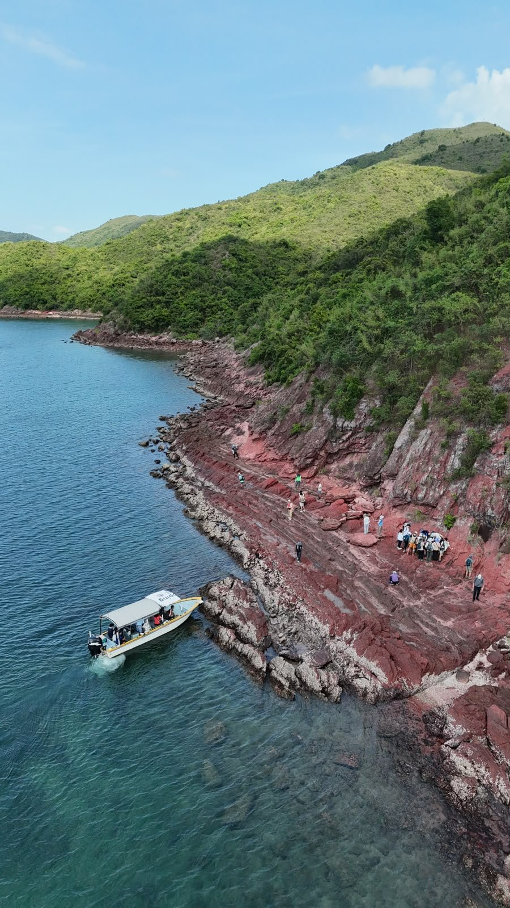
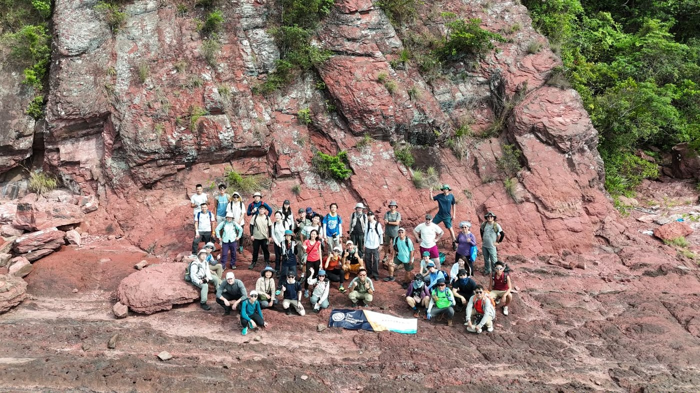
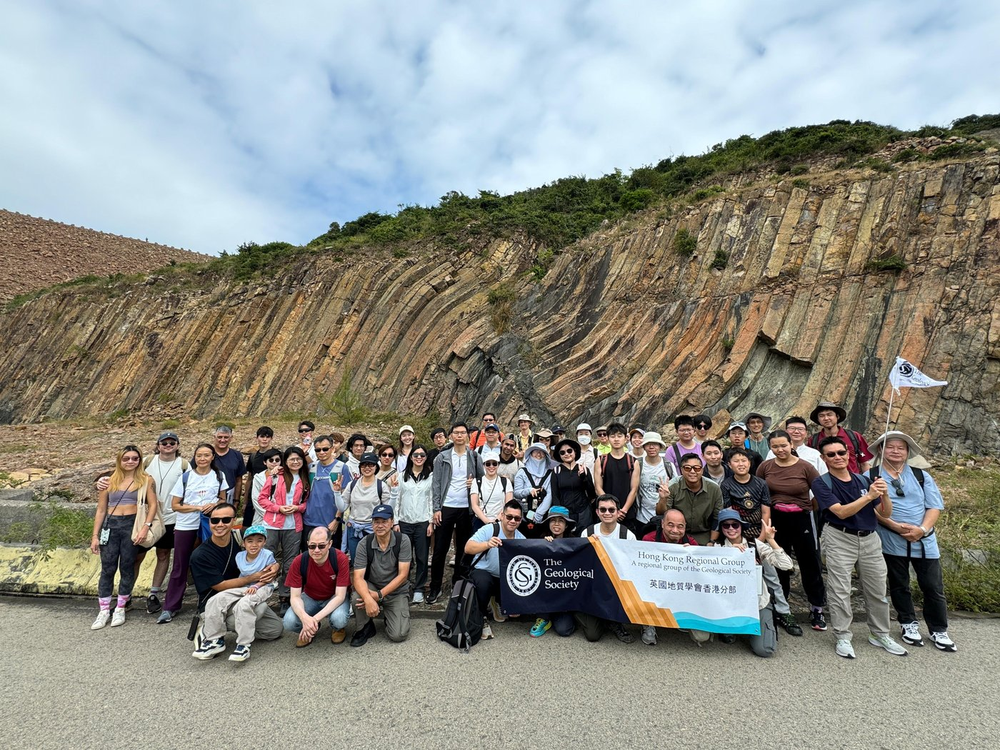
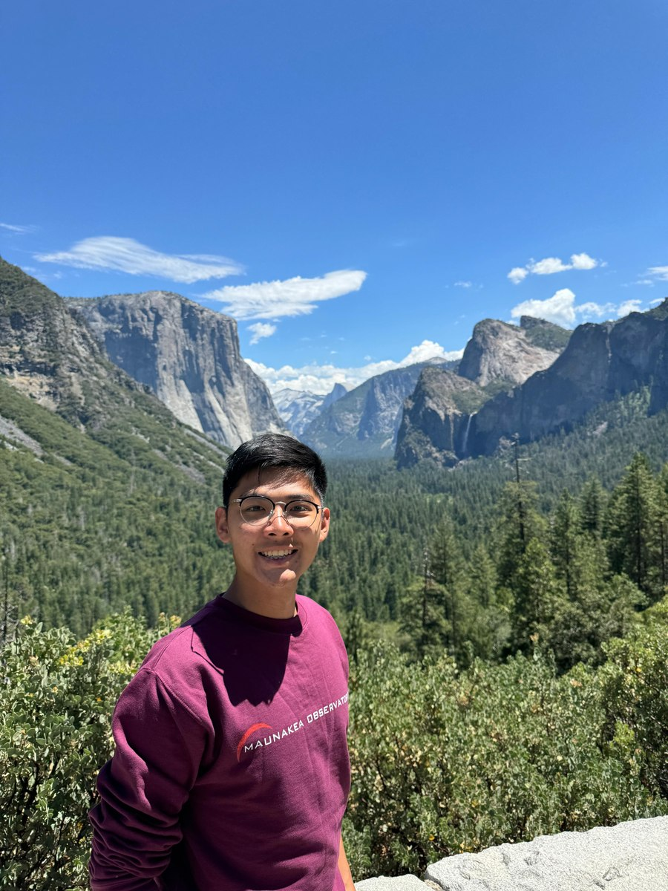

Kenneth Li
Geospatial Data Scientist / Engineering Geologist
Deep learning for the ground beneath us — geospatial AI grounded in real geology.
I'm an Assistant Geologist at Arup with five years on Hong Kong's major rail, tunnel and housing projects, and a geospatial data scientist with an MSc (Distinction) from PolyU, where my deep-learning research raised rock outcrop mapping accuracy from 17% to 86%. I build machine learning that understands real geology.
Featured projects
Models with mud on their boots
Four case studies spanning deep learning, professional geotechnical practice, remote sensing and spatial analysis — each one is a problem → data → method → results story. Click a card to read the full case study.
More work
Skills
Three disciplines, one workflow
Field geology tells me what the ground is doing; GIS and remote sensing tell me where; machine learning scales the answer.
Geoscience
Trained engineering geologist with live site-investigation experience.
- Engineering geology: Risk assessment for rail and tunnel infrastructure
- Site investigation supervision: Drillhole relocation, termination criteria, HDC trajectory checking
- Core & rockhead logging: Rock mass rating (RMR), weathering grades, lab test scheduling (UCS, point load)
- Slope & rockfall hazards: Natural terrain studies, boulder inventories, aerial photograph interpretation
- Site HSE: Statutory health, safety & environmental compliance on live construction sites
Geospatial
From territory-wide terrain models to cloud-native Earth observation.
- GIS analysis: ArcGIS & QGIS; hydrological modelling, IDW interpolation, multi-criteria assessment, 3D GIS
- Remote sensing: VHR aerial imagery, Planet, Sentinel-5P, MODIS, GSMaP; spectral indices (NDVI, SAVI, BAI)
- Google Earth Engine: Planetary-scale time-series for hazards and air quality
- Cartography & spatial big data: District-level analytics, urban mobility, rooftop solar potential
- Mobile development: Android (Kotlin/Gradle) app shipped end-to-end
ML Engineering
Deep learning applied to pixels of the physical world.
- Semantic segmentation: U-Net, DeepLabV3+, CNN encoders on remote-sensing imagery
- Transfer learning: Fine-tuning ResNet50V2, InceptionV3, VGG19; layer freezing, hyperparameter search
- Python DL stack: TensorFlow/Keras and PyTorch data pipelines; LabelMe annotation workflows
- Data engineering for EO: Tiling, augmentation, normalisation, dataset design & leakage control
Writing & research
Research output
Further Enhancement in Rock Outcrop Recognition in Hong Kong with Deep Learning Approach Using Very High-Resolution Aerial Imagery
Supervised by Sr Prof. Charles Man Sing Wong and Dr Coco Yin Tung Kwok. Extends Kwok et al. (2018) with modern transfer-learning backbones on a 0.15 m territory-wide orthophoto mosaic. MSc awarded with Distinction.
Geological Structure Measurement by LiDAR
Authored the Wikipedia reference article on measuring geological structures — bedding, joints and discontinuities — from LiDAR point clouds. Read on Wikipedia →
Community & leadership
Geological Society of London — Hong Kong Regional Group
Chairperson of the Young Fellows Group from 2024 to 2026, organising the events that connect young geologists with the industry's professionals: Young Fellow talks, field trips, the Young Geologist Award competition, a core-logging workshop and the annual dinner.





About
Why earth observation matters

I grew up with Hong Kong's defining geotechnical reality: a dense city pressed against steep natural hillsides. Around 30% of the territory has slopes steeper than 30°, roads and buildings sit directly below natural terrain, and the Geotechnical Engineering Office receives on the order of 300 landslide reports a year. Slope safety here is not an abstraction — it is public safety.
That context shaped both halves of my career. As an Assistant Geologist at Ove Arup & Partners Hong Kong since 2021, I have worked on geological risk assessment for new rail lines, site investigation for one of the city's busiest road tunnels, and day-to-day supervision of ground investigation works — logging core, verifying rockhead, and occasionally catching problems no model would see. As a geospatial data scientist (MSc with Distinction, Land Surveying & Geo-Informatics, PolyU), I turn that domain knowledge into deep learning systems that map hazard-relevant ground features at territory scale.
The combination matters globally. Climate-driven extremes are making rockfall, landslides, floods and wildfires more frequent everywhere — and the earth-observation models that forecast them are only as good as the ground truth beneath them. I want to build that next generation of geology-literate geospatial AI, and I'm open to international opportunities in research labs and engineering teams working on Earth observation and natural-hazard forecasting.
Contact
Let's talk about the ground.
Recruiting for geospatial AI, Earth observation or geotechnical roles — or just want to compare notes on rock outcrop segmentation? Email is best.